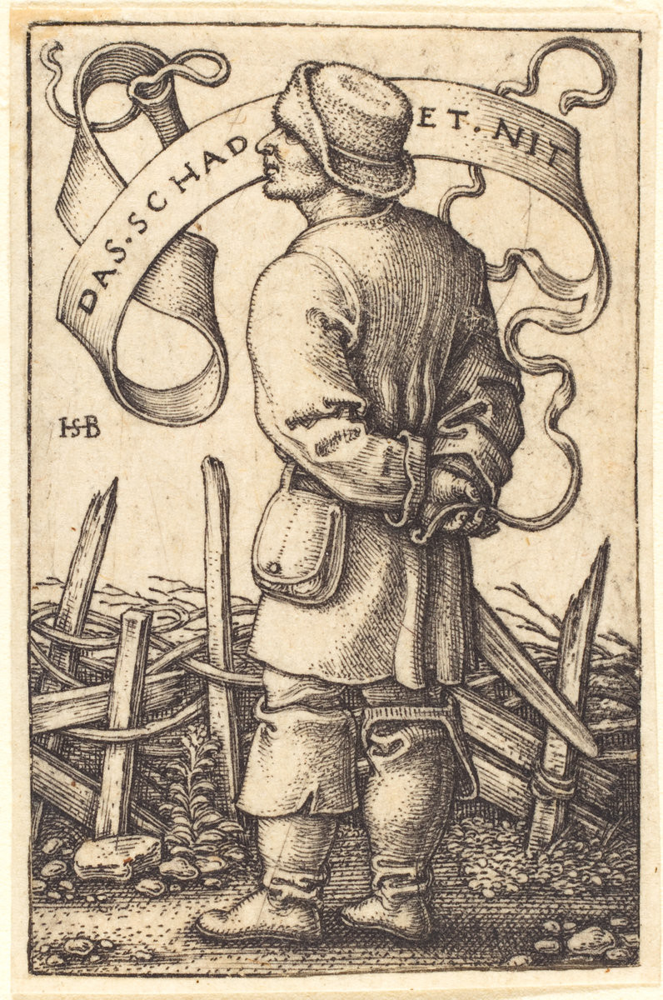
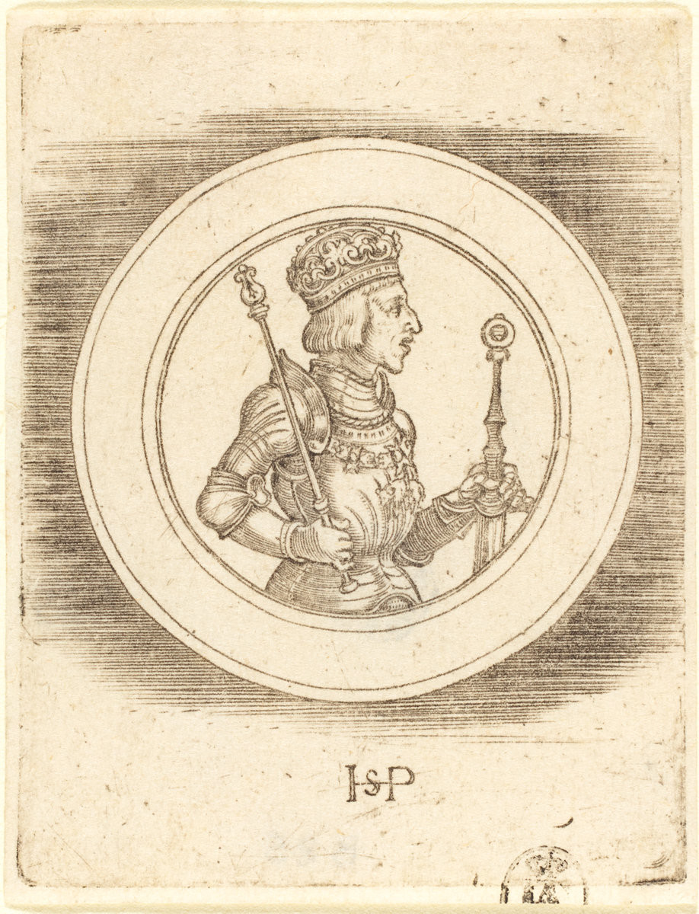
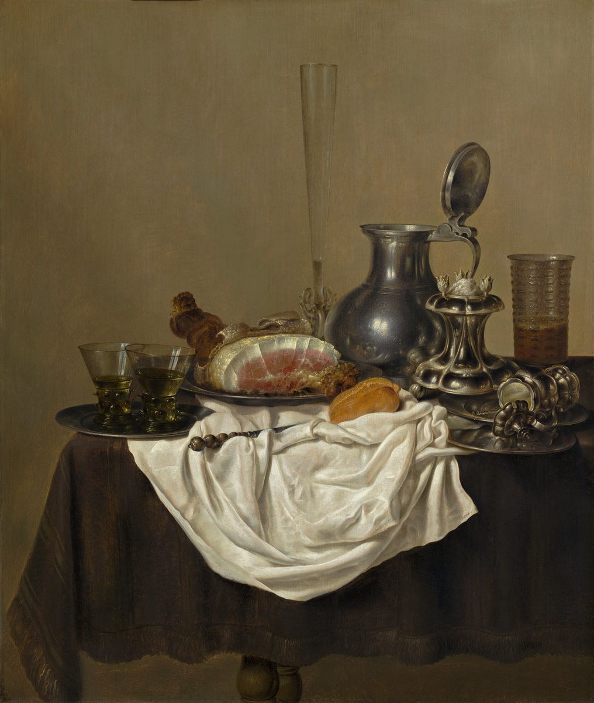

Enter the Jester
August 27, 2017
My lord: Jester? My Jester!
Jester: Oh yes M'lord.
My lord: My stables are brimming with horses, it is true. My horses are the finest there is, that is also true. Before I sleep, I worry about expanding my borders, I admit.
Jester: That's all true M'lord.
My lord: But I do it for our people, everyone knows this.
Jester: Everyone M'lord.
My lord: I wake up earlier than any common man in our lands. I am out in the forests hunting to stay sturdy while they sleep. Shortly after, you spy me busy, meeting my generals, designing our next battles. I spare no effort Jester, no waking moment. I would say I spend more time working than anyone. And that, for the good of every man under our sun, for those are a good ruler's holy duties.
Jester: Truth be told, M'lord.

The Weather Peasant: "Das Schadet Nit" (1542), Hans Sebald Beham
My lord: And yet Jester, I hear them whispering. I have it too easy... they murmur. Don't they understand they will benefit from our new borders? Don't they understand that one day, our kingdom will be so prosperous that they all will be as well-off as kings?
Jester: Our people are not idiots M'lord.
My lord: Truth be told, Jester. For I make sure we teach them well.
Jester: Yes M'lord, so I think they do understand.
My lord: And yet they complain.
Jester: They are impatient M'lord, for they do not have your wisdom. They are afraid, for they do not hold your valiance. They fear their lives would expire before we so flourish. They are saddened about their children working the field while our dear Princes practice fencing and study Geography.

Medal of King Ferdinand of Hungary and Bohemia (1500–1550)
My lord: Yes, this is the heavy weight my destiny makes me carry Jester. Sacrificing the luxury of the individual for the prosperity of the kingdom. Someone must plant the potatoes I daily provide on your plate.
Jester: Someone must M'lord. They don't know you well enough to appreciate your heavy weight. Your burden is a thousandfold heavier than their eternal waiting for the day where their children will be as comfortable as kings.
My lord: Great things are not built in a day. Piece by piece, we will grow. Bit by bit, our trade will prosper. Explain it to them.
Jester: It is hopeless M'lord. They do not understand the economies of kingdoms. They think that what should happen piece by piece, is a fair division of our profits between them all, equally, and not the growing of our borders.
My lord: They truly are ignorant Jester. That won't work, we both know it.
Jester: M'lord, perhaps we could wed their piece-by-piece folly to your bit-by-bit prudency. We don't have to divide now, fully equally, all at once. We could try it for a month per year for two years, and if it works, try it for two months per year for another two. I already hear them cheering. Maybe there is a golden middle along that line that would silence their mumbling.

Still Life with Ham (1650), Gerrit Willemsz. Heda
My lord: Jester, sometimes I think you are as much of a fool as they are, musing not the lot further than your long nose. In a couple of decades, our peasants will be as well-off as my grandchildren. Who will work the fields for the sake of your kin's plate?
Jester: Peasants M'lord. Peasants who are as well-off as lords. Peasants who work their fields as proudly as the proudest kings. Maybe just like those in the golden kingdom that appears around the infinite tail of our border enlargement and trade multiplication ploys.
My lord: You entertain me Jester.
References
Medal of King Ferdinand of Hungary and Bohemia (1500–1550): National Gallery of Art
The Weather Peasant: "Das Schadet Nit" (1542): National Gallery of Art
Still Life with Ham (1650): National Gallery of Art